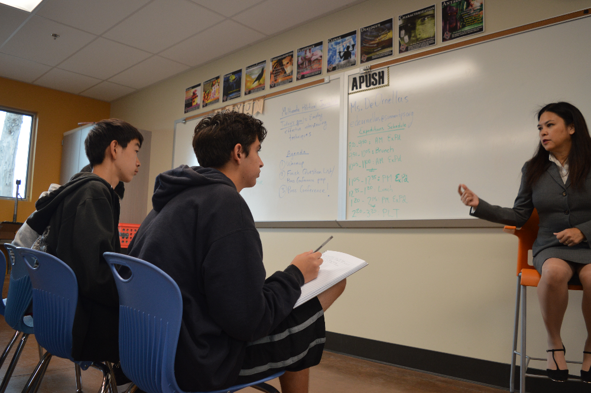

Congressional candidate Cristina Osmeña wants to be an advocate for the values of District 14 and District 14 only. Ms. Osmeña believes that she would be a great candidate because she will be a voice for the people.
Ms. Osmeña stated that the reason constituents should vote for her is that she would have “values consistent with the fourteenth district” and that she is a “moderate Republican.” She believes residents should give her endorsements because she will listen to them.
On Aug. 23, Ms. Osmeña visited Summit Shasta High School to participate in a press conference with Summit News to discuss critical topics such as immigration and tax cuts. Ms. Osmeña feels that she has “values consistent with immigrants” and that she understands them because she grew up with friends and family that were undocumented.
Ms. Osmeña explained more about how she would treat immigration policy if she were elected. Being an immigrant herself, she has strong opinions on this issue. She said she “was unaccustomed...to the new country” when she came as a political refugee, and she understands that it would have been “probably traumatic” if she’d been older.
However, Ms. Osmeña did state that there needed to be “repercussions for illegal immigrants.” She made it clear that she believes in secure borders, but immigrants should never be “singled out.”
Ms. Osmeña said she wants to downsize the government, particularly concerning social services. Ms. Osmeña said that Social Security can be left alone and that it can “self correct.” However, she stated that there is a “lot of fat in the system,”specifically
referring to Medicare.
Ms. Osmeña stated that she is a “centrist.” She showed this when she said she “doesn’t want to second guess or defend Trump.”
She values a “financially responsible government” that’s mindful of the budget. She plans to “lobby for money from District 14.” Ms. Osmeña said this is why she appeals more to voters in the 14th district than Jackie Speier because the other candidate “will vote to raise taxes,” which she won’t because “no one wants that.”
Ms. Osmeña pledges to “be an active participant in legislature,” and to “listen to you.”
